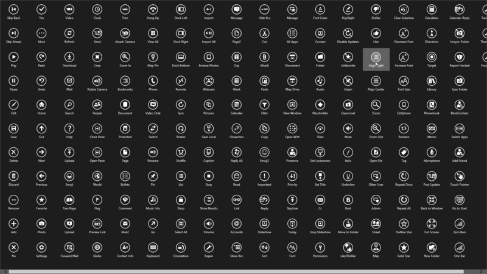
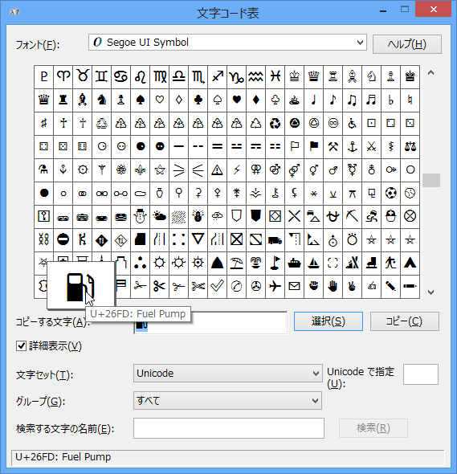
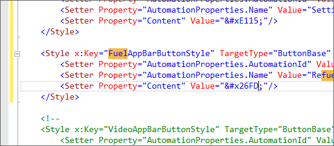
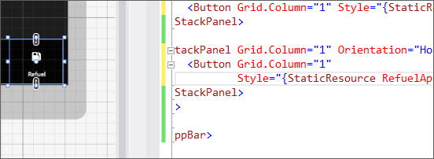
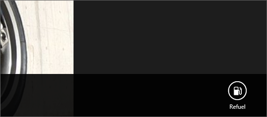
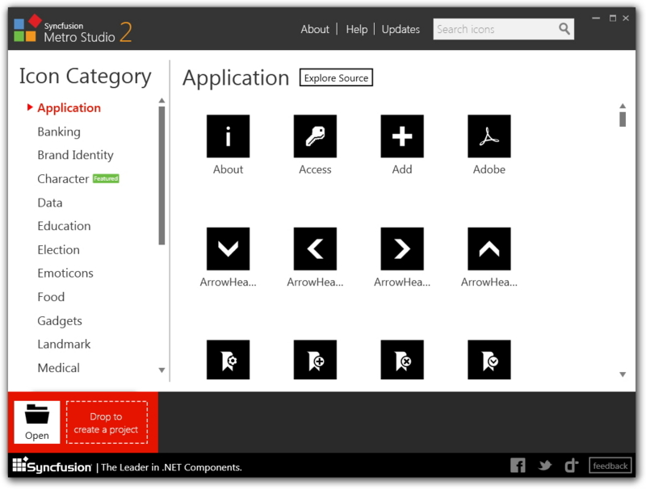

メトロっぽいカスタムボタンを XAML で作る
公開日：

StandardStyles.xaml はお宝の宝庫や！ という話を前回（Common フォルダをチラ見してみる - だるろぐ）少しした。たとえば、ボタンなんかはほとんど自分で作る必要がないぐらい、豊富に取り揃えられている。
けれど、それでも足りない場合があるかもしれない。おれは足りなかった。燃費記録用の Windows ストアアプリを作ってみた - だるろぐ に使う「ガソリン」アイコンのボタンがほしい！ なんでないんだっ？ レドモンドは何をしているっ！
そこでふと、死んだじいちゃんの言葉を思い出した。「なければ自分で作れ」。そうだ、じいちゃん。作ってみるよ、おれ！
まずは偵察
<Style x:Key="FourBarsAppBarButtonStyle" TargetType="ButtonBase" BasedOn="{StaticResource AppBarButtonStyle}"> <Setter Property="AutomationProperties.AutomationId" Value="FourBarsAppBarButton"/> <Setter Property="AutomationProperties.Name" Value="Four Bars"/> <Setter Property="Content" Value=""/> </Style>
これは StandardStyles.xaml で定義されている「バリ4」アイコンのソース。AppBarButtonStyle を継承していて、AutomationProperties.AutomationId、AutomationProperties.Name、Content の3つのプロパティを書き換えているのがわかる。
ちなみに、AppBarButtonStyle のコードは読む気が起きなかった。たぶん、Content を丸で囲って、下にテキストを追加する、みたいなことをやっているのだろう。知らんけど。
Content は文字の実態参照（っていうんだっけ？）で、AppBarButtonStyle はそれを Segoe UI Symbol で描画しているらしい。へぇ、あのアイコンの絵って、全部フォントだったんだ。
AutomationProperties はアイコンの下にでてくるテキストに関係があるみたい。試しに空にしてみたらテキストが消えた。
これでだいたい偵察が済んだ。簡単にカスタマイズできそうだ。
適当にカスタマイズしてみる

まず、文字コード表から目的の文字を探す。あった！ たいていのモノはありそうだな。
次に文字コードをもとにさきほどのスタイルをコピペして魔改造する。

んで、実際にバインドして使ってみる。

サークルが、消えている！ (；ﾟДﾟ) ﾅｾﾞﾀﾞ！

なんか、FlowLayout を RightToLeft にしていると消えてしまうみたい。理由まで調べるのは面倒だったけど、既定通り LeftToRight に戻したらサークルが出た。
これを応用したらボタンを腐るほど量産できるな！
おまけ

もっとボタンがほしければ、こういうのもある。有名ソフトのアイコンまでカバーされていていい感じ。